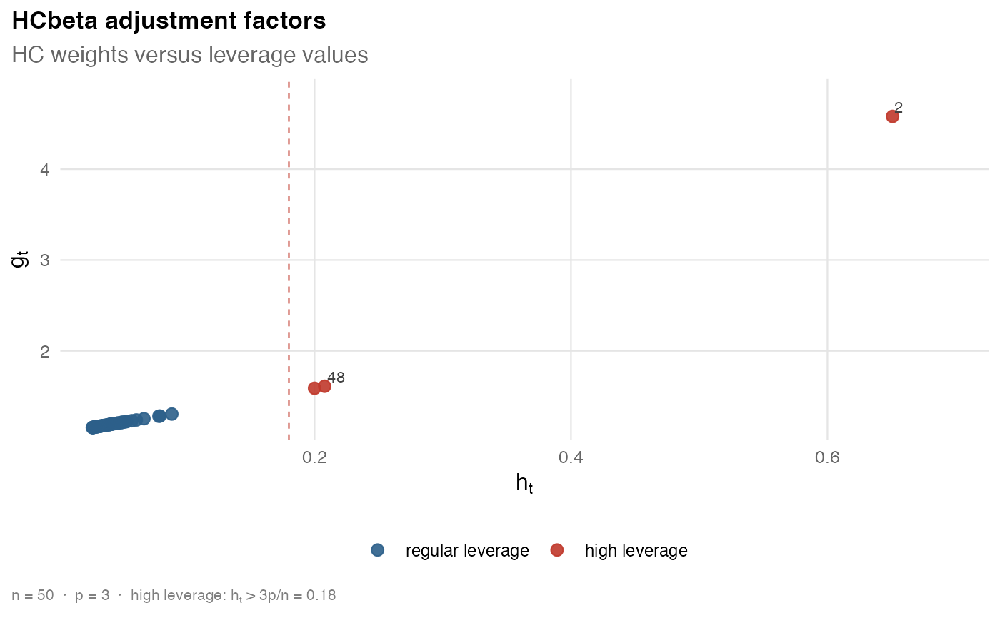

Computes a heteroskedasticity-consistent covariance matrix estimator for an
ordinary least squares model fitted with stats::lm(). The function returns
a rich S3 object that stores the covariance matrix, HC weights, leverage
values, method parameters, and model metadata.
Arguments
- object
An ordinary least squares model fitted by
stats::lm().- type
A character string specifying the HC estimator. The default is
"hcbeta".- ...
Method-specific constants. Unknown names are rejected. See Details for the accepted names, defaults, and parameter domains.
Value
An object of class hcinfer_vcov. The covariance matrix is stored in
object$vcov and is returned directly by vcov().
Details
For a linear model with design matrix \(X\), OLS residuals \(\hat e_t\), and HC weights \(g_t\), the estimator is
$$\widehat{\Psi}_{HC} = (X'X)^{-1} X' \widehat{\Omega} X (X'X)^{-1},$$
where \(\widehat{\Omega} = diag(\hat e_t^2 g_t)\). The supported
estimators are "hc0", "hc1", "hc2", "hc3", "hc4", "hc4m",
"hc5", "hc5m", and "hcbeta".
Additional arguments in ... are method-specific. The defaults are:
"hc0","hc1","hc2","hc3","hc4", and"hc4m": no method-specific arguments."hc5":k = 0.7."hc5m":k = 0.7,k1 = 1,k2 = 0,k3 = 1,gamma1 = 1, andgamma2 = 1.5."hcbeta":c1 = 7,c2 = 0.75,lower = 0.01, andupper = 0.99.
For "hc5" and "hc5m", k, k1, k2, and k3 must be nonnegative,
while gamma1 and gamma2 must be positive. For "hcbeta", c1 must be
nonnegative, c2 must be positive, and lower and upper must lie in
(0, 1) with lower < upper. The HCbeta truncation is
\(w_t = max(lower, min(1 - h_t, upper))\).
References
White, H. (1980). A heteroskedasticity-consistent covariance matrix estimator and a direct test for heteroskedasticity. Econometrica, 48(4), 817-838.
Cribari-Neto, F. (2004). Asymptotic inference under heteroskedasticity of unknown form. Computational Statistics and Data Analysis, 45(2), 215-233.
Cribari-Neto, F. and da Silva, W. B. (2011). A new heteroskedasticity consistent covariance matrix estimator for the linear regression model. AStA Advances in Statistical Analysis, 95(2), 129-146.
Examples
schools <- PublicSchools |>
dplyr::mutate(
income_scaled = income / 10000,
income_scaled_sq = income_scaled^2
)
fit <- lm(expenditure ~ income_scaled + income_scaled_sq, data = schools)
cov <- vcov_hc(fit, type = "hcbeta")
cov
#>
#> ── 🥪 HCbeta robust covariance ─────────────────────────────────────────────────
#> 📐 Model: `expenditure ~ income_scaled + income_scaled_sq`
#> Dimension: 3 x 3
#> Observations: 50
#> Parameters: 3
#> 🎯 Maximum leverage: 0.6508
#> ⚖️ Maximum robust weight: 4.5807
#> Use `vcov()` to extract the stored covariance matrix.
vcov(cov)
#> (Intercept) income_scaled income_scaled_sq
#> (Intercept) 723617.6 -1962262 1312195
#> income_scaled -1962262.2 5329884 -3569755
#> income_scaled_sq 1312195.3 -3569755 2394627
plot(cov)

vcov_hc(fit, type = "hcbeta", c1 = 7, c2 = 0.75, lower = 0.01, upper = 0.99)
#>
#> ── 🥪 HCbeta robust covariance ─────────────────────────────────────────────────
#> 📐 Model: `expenditure ~ income_scaled + income_scaled_sq`
#> Dimension: 3 x 3
#> Observations: 50
#> Parameters: 3
#> 🎯 Maximum leverage: 0.6508
#> ⚖️ Maximum robust weight: 4.5807
#> Use `vcov()` to extract the stored covariance matrix.
vcov_hc(fit, type = "hc5", k = 0.7)
#>
#> ── 🥪 HC5 robust covariance ────────────────────────────────────────────────────
#> 📐 Model: `expenditure ~ income_scaled + income_scaled_sq`
#> Dimension: 3 x 3
#> Observations: 50
#> Parameters: 3
#> 🎯 Maximum leverage: 0.6508
#> ⚖️ Maximum robust weight: 2946.7866
#> Use `vcov()` to extract the stored covariance matrix.
vcov_hc(fit, type = "hc5m", k = 0.7, k1 = 1, k2 = 0, k3 = 1)
#>
#> ── 🥪 HC5m robust covariance ───────────────────────────────────────────────────
#> 📐 Model: `expenditure ~ income_scaled + income_scaled_sq`
#> Dimension: 3 x 3
#> Observations: 50
#> Parameters: 3
#> 🎯 Maximum leverage: 0.6508
#> ⚖️ Maximum robust weight: 8438.7828
#> Use `vcov()` to extract the stored covariance matrix.